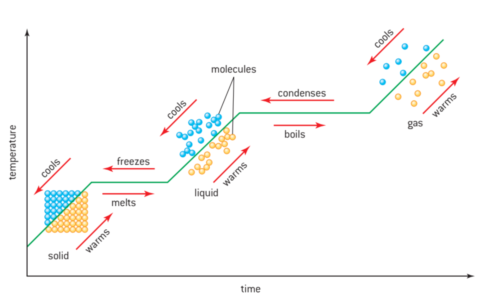

En este tema nos fijamos en los procesos térmicos resultando en la transferencia de energía entre objetos en diferentes temperaturas
Energia se mueve del objeto mas caliente al objeto mas frio hasta que tengan la misma temperature. Esto se llama equilibrio termal. Temperatura se mide en celsius y kelvin
0 Kelvin (unidad SI) se define como cero absoluto - el punto donde todo la masa tiene energia cinetica minima.
| Energia Interna | La energia interna de una substancia es la total de la energia potencial y la energia cinetica de todas las particulas en la substancia. |
| Termino | Definicion | Ecuacion |
|---|---|---|
| Capacidad Calorifica | la capacidad calorífica específica (c) de una sustancia como la energía transferido a 1 kg de la sustancia causando que su temperatura aumentar en 1 k. | $c=\frac{Q}{m\Delta T}$; donde Q es la cantidad de energia suministrado al objeto de masa $m$ y causando un aumento de energia de $\Delta T$ |
Energia para cambiar la fase de un 1kg de una substancia.
$$Q=mL$$; Q es la energia suministrado; m es la masa; L es el calor latente
| Ley | Definicion |
|---|---|
| Ley de Boyle | para masa, temperatura constante; presion inversamente proporcional al volumen; $p \propto \frac{1}{V}$ |
| Ley de Charles | para masa, presion constante; volumen proporcional a la temperatura;$V \propto T$ |
| Tercera Ley | para masa, volumen constante; presion proporcional a la temperatura;$p \propto T$ |
| Ley de Avogadro? | numero de particulas de un gas en temperatura, presion constante es proporcional al volumen del gas; $n \propto p$ |
| Ley de los gases ideales | $pV=nRT$; n es el numero de particulas en moles |
El mole representado por "mol" es una medida de la cantidad de una substancia.
| Mole | La cantidad de substancia teniendo la misma cantidad de particulas como atomos neutrales en 12 gramos de carbono-12 |
Un mole de un gas tiene $6,02 \times 10^{23}$ atomos o moleculos; este numero se llama el constante de Avogadro ($N_A$)
La masa de 1 mole de una substancia es la masa molar.
En esta teoria, asumimos:
Ecuacion para gases ideales
$$p=\frac{1}{3}\rho\overline{c^2}$$
Ecuacion:
$$\frac{3}{2}k_BT=\frac{1}{2}m\overline{c^2}$$
el simbolo $k_B$ representa el constante de Boltzmann
Ecuacion:
$$\text{energia interna total} = \frac{3}{2}Nk_BT$$
Tambien se puede escribir como
$$\overline{E_c}=\frac{3}{2}k_BT=\frac{3}{2}\frac{R}{N_A}T$$